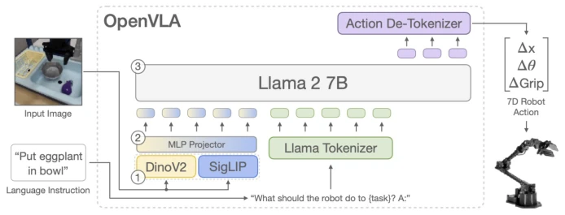
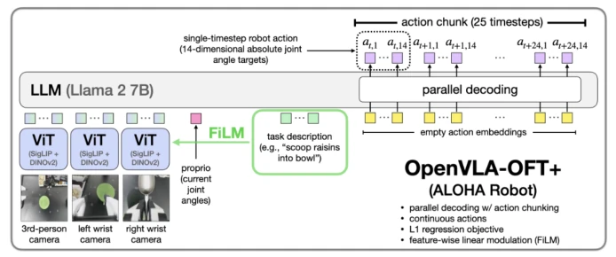
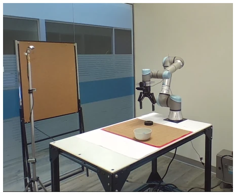
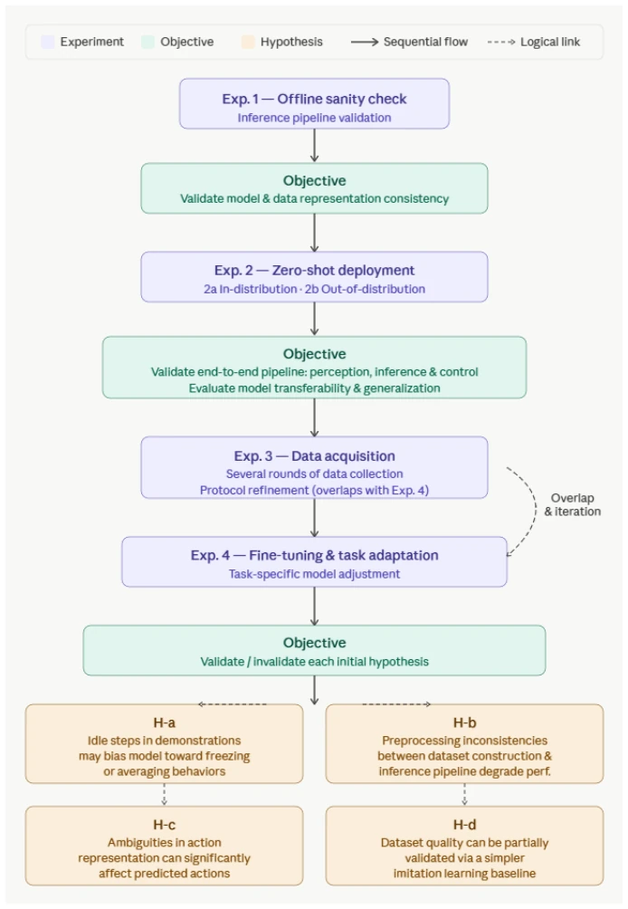
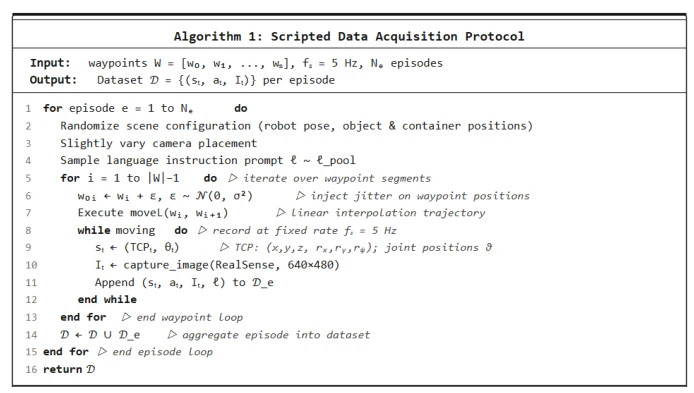
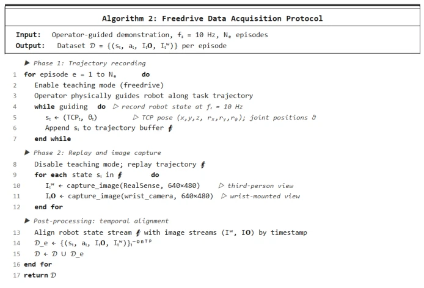
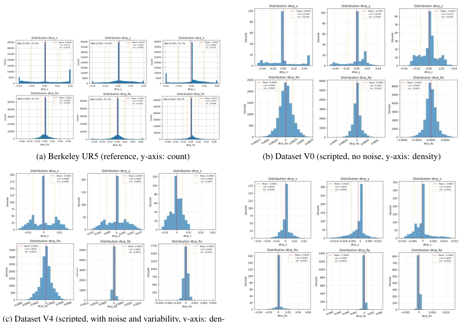
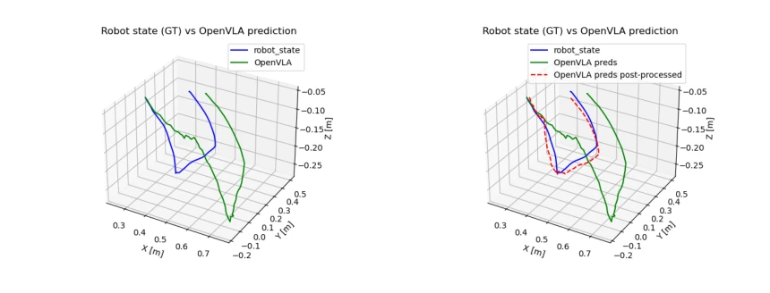
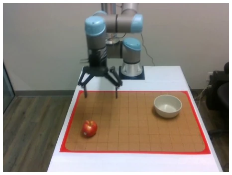

This paper acts as a bucket of cold water poured on the fervent VLA models. The authors did not develop a new architecture, but instead deployed OpenVLA on UR5e for actual testing, finding that even with excellent offline metrics, the system collapses when run on real hardware. The highlight is providing a complete real-world data pipeline and RLDS standard, but the drawback is that the conclusion is too "correct"—it is not that the model is bad, but that engineering details like data alignment, coordinate systems, and preprocessing were not aligned. This is like buying a Ferrari but adding low-quality fuel; no matter how good the engine is, it will not run fast. For the community pursuing "end-to-end", this reminds us not to focus solely on model parameters; the pitfalls of system integration are deeper than those of the model itself. The stability of real-world deployment depends more on the precise alignment of the data-model-control chain, rather than simply stacking computing power. The authors reconstruct the VLA robot challenge from a model-centric problem to a system-level issue; although there are no stunning algorithms, the engineering value is extremely high.
The motivation stems from VLA models performing excellently in simulation and benchmarks, but real-world deployment being full of uncertainty [1, 7]. Existing work mostly focuses on simulation environments like LIBERO or CALVIN [10, 11], lacking transfer verification for real industrial collaborative robots (such as UR5e). Although OpenVLA is open-source [4], it lacks adaptation guides for specific hardware [5]. The authors aim to answer: how to reliably execute manipulation tasks under real physical constraints? Existing research ignores the systematic alignment of the data-model-control chain, leading to a huge gap between "offline metrics" and "real-world performance" [16]. This paper attempts to fill this gap, revealing transfer bottlenecks from simulation to real-world through controlled experiments, emphasizing the importance of system-level engineering, and pointing out the current ecosystem fragmentation and lack of methodological guidance.

Figure 1: Architecture of the OpenVLA model, as proposed in [4]
The overall process is divided into four stages: offline validation, zero-shot real-world deployment, fine-tuning adaptation, and multi-configuration evaluation. Hardware uses UR5e plus dual cameras (third-person view + wrist view) [3]. Software uses client-server architecture, model deployed on GPU cluster, control end communicates via Gradio. Regarding data, multiple dataset versions V0-V5 were constructed, covering scripted (waypoint) and manual-guided (freedrive) collection [5, 6], uniformly converted to RLDS format [14]. Fine-tuning uses LoRA [15] to adapt OpenVLA and OpenVLA-OFT [2]. The key innovation lies in establishing a complete engineering pipeline from data collection, preprocessing (image/action alignment) to inference, particularly emphasizing coordinate normalization, action semantic consistency, and time synchronization, rather than simply improving model architecture. By comparing different dataset versions, the impact of data diversity on model generalization was verified, and a standardized toolchain based on RLDS was proposed to ensure experimental reproducibility.

Figure 2: OpenVLA-OFT architecture from [6]

Figure 3: Experimental robotic plateform used for the project (UR5e, Gripper Robotic 2F-140, Vention supports, third-eye IntelRealSense D435 camera and hand-eye Logitech Webcam)

Figure 4: Global overview of the applied deployment workflow.

Figure 5: Scripted protocol. Waypoint-based trajectories with injected variability. Variability introduced through scene randomisation, prompt sampling, and waypoint jitter.

Figure 6: Freedrive protocol. Two-phase collection: manual guidance records state at 10Hz followed by trajectory replay for image capture with post-hoc temporal alignment.

Figure 7: Action distributions (∆x, ∆y, ∆z, ∆rx, ∆ry, ∆rz) across selected dataset versions compared to the Berkeley UR5 reference. Note that Berkeley is displayed in raw counts while local datasets are displayed in density, reflecting differences in dataset scale; the comparison focuses on distribution shape rather than absolute values. The gripper dimension is excluded from this comparison.
Experiments compared different dataset versions (V0-V5) and OpenVLA vs. OpenVLA-OFT. Metrics include offline trajectory error, real-world closed-loop success rate, and action distribution consistency. It was found that zero-shot deployment performs unstably on real hardware; fine-tuning improves offline metrics but real-world closed-loop is still affected by data quality. Action distribution analysis shows that scripted data (V0) has high determinism but low diversity, while introducing noise and human guidance (V5) makes the distribution flatter. The key finding is that the model performance bottleneck is not in capacity, but in minor inconsistencies in data preprocessing and system integration, leading to error accumulation during inference. The instability of real-world closed-loop behavior cannot be attributed solely to model limitations, but more to minor deviations in data representation and system integration. Experiments revealed failure modes, proving that data quality is more critical than model capacity.

Figure 8: 3D trajectory comparison (GT vs OpenVLA predictions). This figure shows the ground-truth trajectory together with OpenVLA predictions in 3D spaces, including raw (a) and post-processed (b) predictions.

Figure 10: Frame from OOD episode from our own custom dataset.